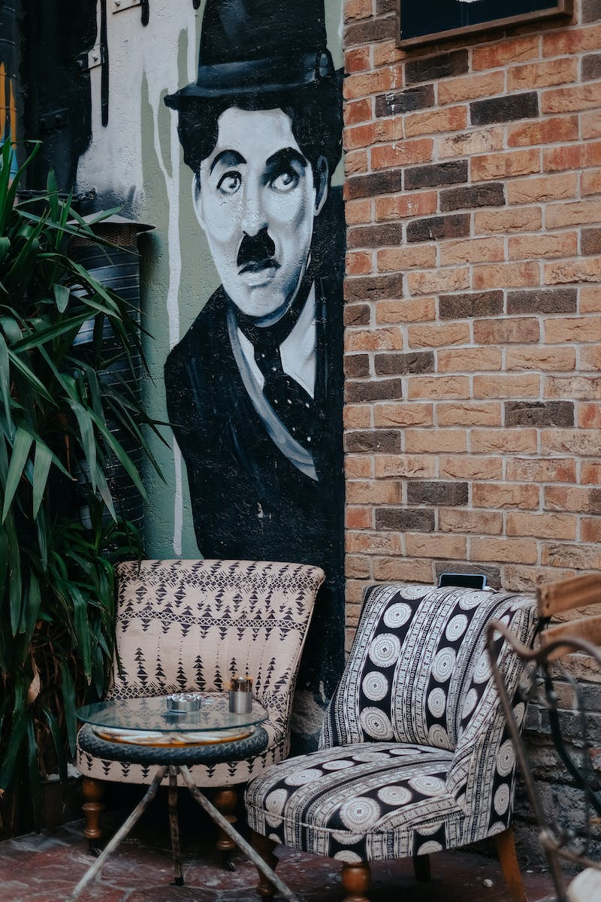

Understanding the Art of Graffiti
The common expression "to take to the streets" has been used for years to reflect a diplomatic arena for people to protest, riot, or rebel. Early graffiti writers of the 1960s and 70s embraced this philosophy as they began to tag their names across the urban landscapes of New York City, Los Angeles, and Philadelphia. As graffiti bloomed outward across the U.S., Street Art evolved to encompass any visual art created in public locations, specifically unsanctioned artwork
The underlying drive behind Street Art grew out of the belief that art should function in opposition to, and sometimes even outside of, the authority system of laws, property, and ownership. It needed to be accessible, rather than hidden away inside galleries, museums, and private collections; and be democratic and empowering, in that all people (regardless of race, age, gender, economic status, etc.) should be able to create art and have it be seen by others. Although some street artists do create installations or sculpture, they are more widely known for the use of unconventional art mediums such as spray paint, stencils, wheat paste posters, and stickers. Street Art has also been called independent public art, post-graffiti, and guerilla art.